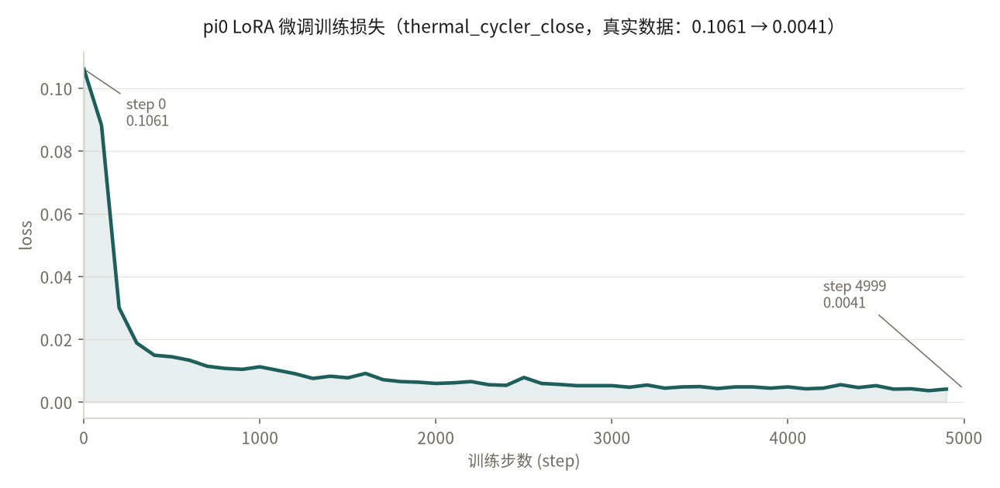
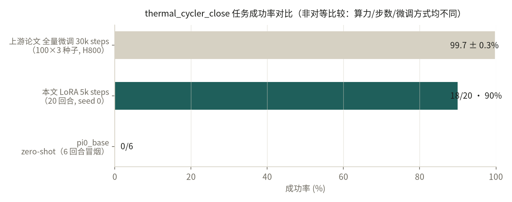

On AutoBio (a robot-manipulation benchmark for digital biology labs), I LoRA fine-tuned the VLA foundation model π0 (PaliGemma 2B + 300M action expert): first repaired several breakages in the frozen upstream snapshot, then trained for ~7.5 hours on a single consumer GPU, lifting thermal_cycler_close (closing a PCR machine lid) from zero-shot 0/6 to 18/20 (90%). Weights, per-episode results, training curves and rollout videos are all public and reproducible.


Each square is one real rollout, from the raw JSON saved by the eval script — no cherry-picking.
Honest scope of this result: this is the easiest of the 12 tasks (single task); a single seed and 20 episodes give a wide confidence interval (Wilson 95% ≈ 68%–98%); the zero-shot 0/6 was a 6-episode smoke check, not a rigorous estimate; and it is not comparable to the upstream paper's full fine-tune (30k steps, H800 cluster) in compute, steps or method. What it does show is that I can run the full data → training → evaluation loop on a real VLA codebase and fix the engineering problems along the way — not an extrapolatable SOTA number.
autobio/task.py — fixed 6 stale task import paths so all 12 tasks import again;openpi/scripts/train.py — added a missing return in wrap() fixing KeyError: SLURM_JOB_ID at the end of training on non-SLURM machines;openpi/uv.lock — pinned nvidia-cuda-nvcc-cu12==12.9.86, required for RTX 5090 (sm_120);export_lora.py / load_lora.py (portable LoRA export/merge) and a standalone inference demo.All credit for the AutoBio benchmark (simulation assets, tasks, datasets and paper) belongs to the upstream AutoBio team; this repo is only a study reproduction and repair on top of it.
Run harder tasks (unscrewing, pipetting) and multi-seed evaluations with the same pipeline to tighten the confidence interval; then compare against the RDT base. Longer term, make "fine-tuning a VLA foundation model" a routine tool in my toolbox, plugged into my own simulation projects.